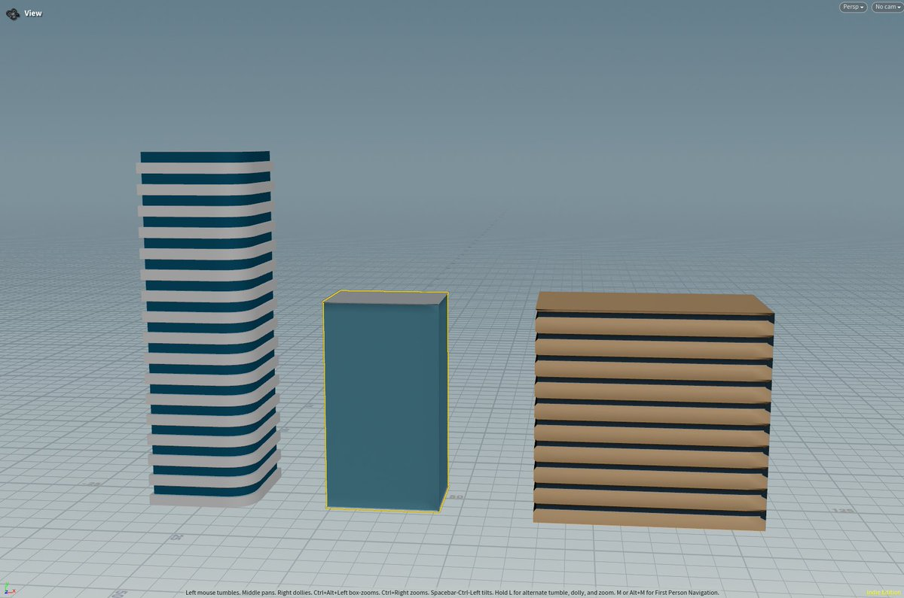
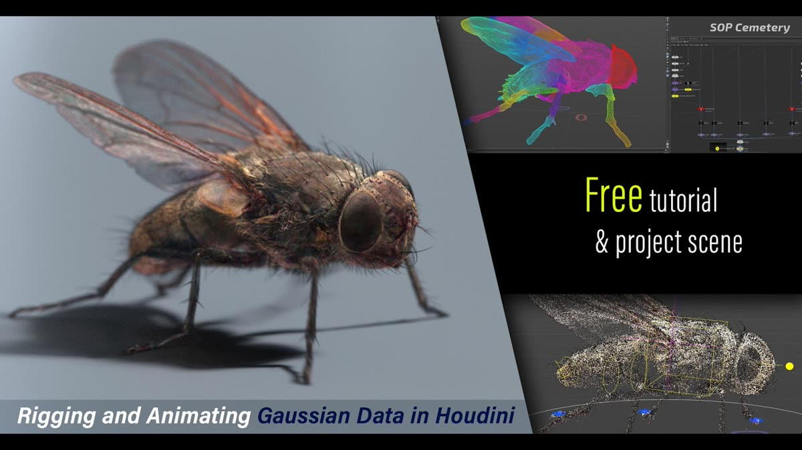
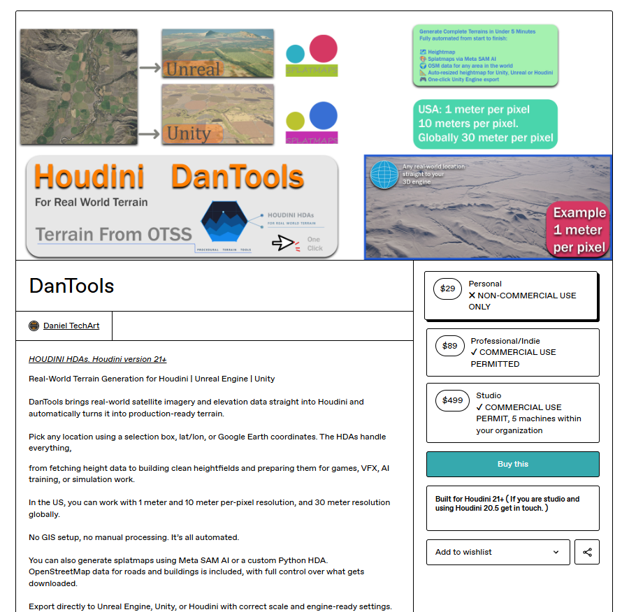
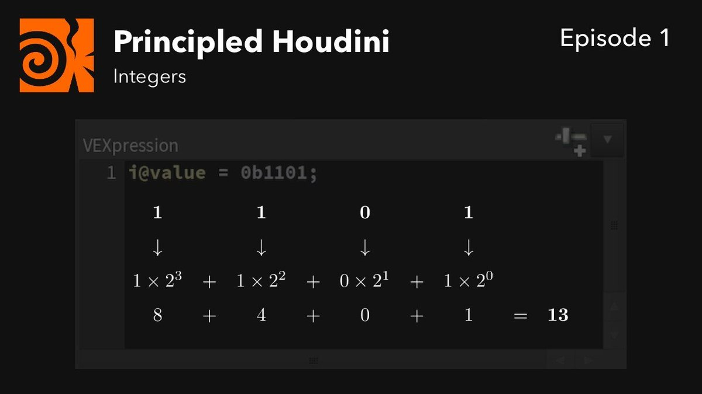
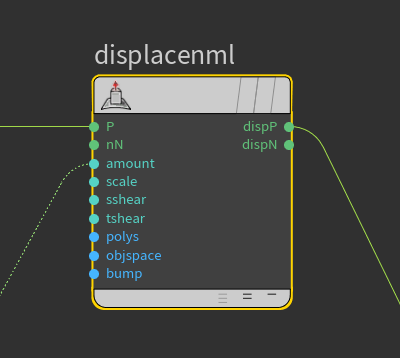
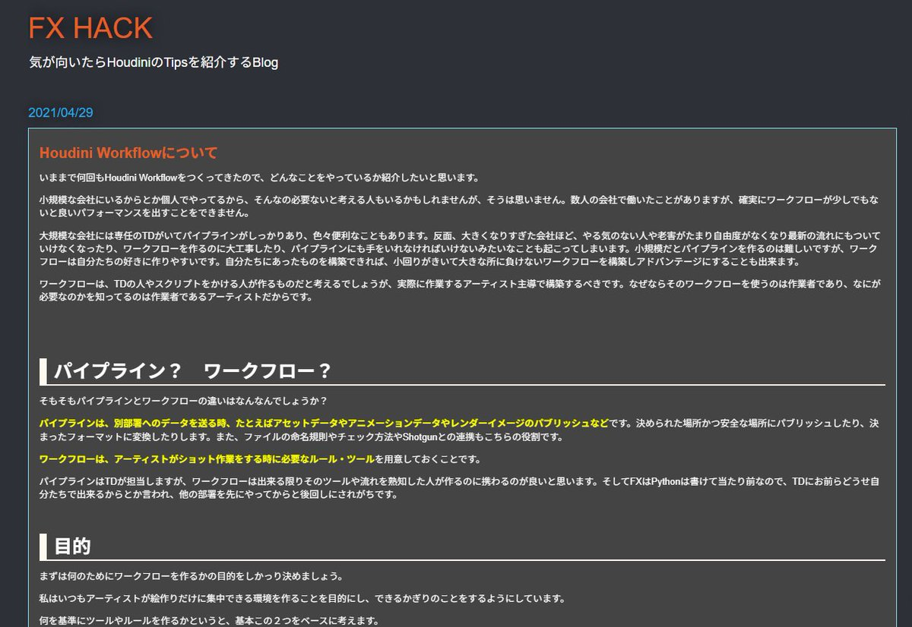
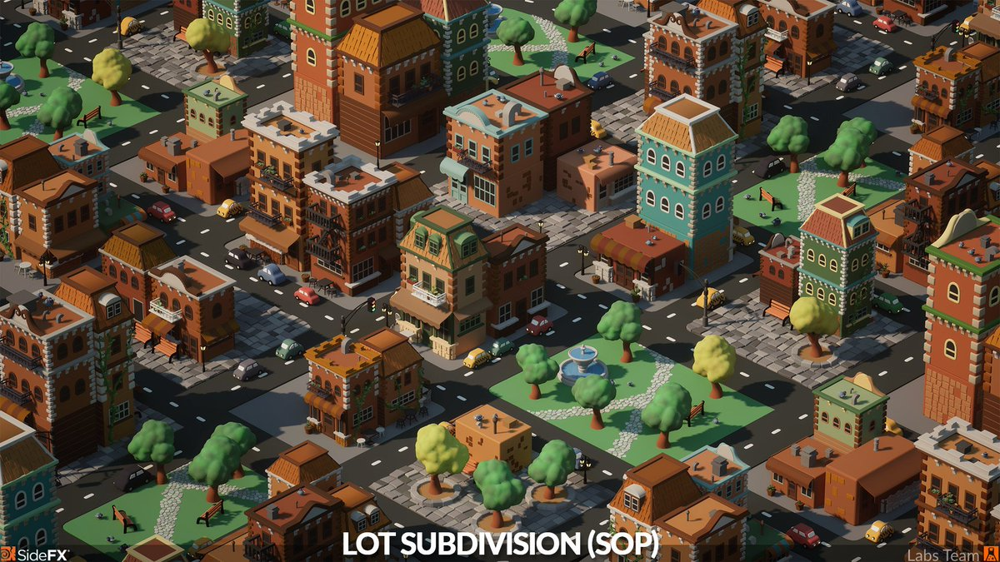
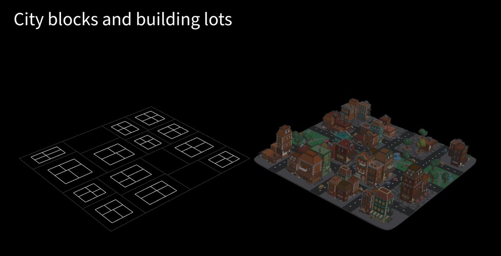
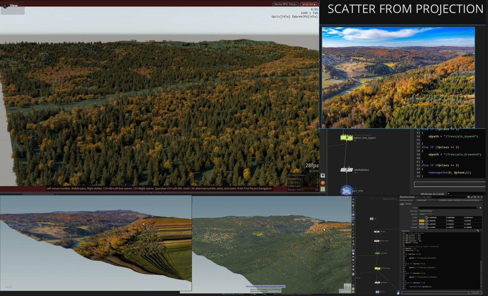
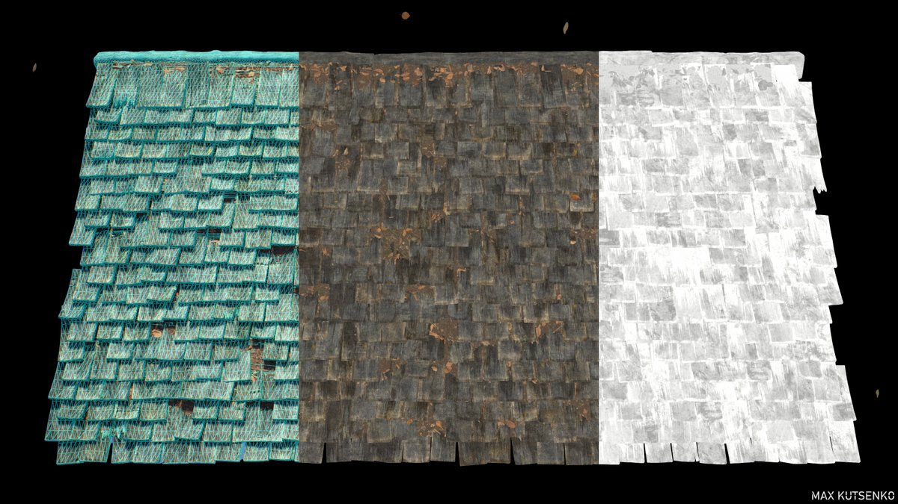

HoudiniのAIアシスタント（LinkedInで紹介）。デバッグやノード・パラメーターの分析を行ってくれる。
URL
https://www.linkedin.com/feed/update/urn:li:activity:7384537975310680066/
HoudiniのAIアシスタント（LinkedInで紹介）。デバッグやノード・パラメーターの分析を行ってくれる。
同じタグを持つポストです。









